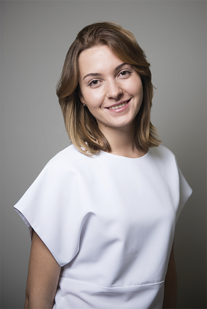

О центре / Специалисты / Юлия Лузько
Специалисты

Юлия Лузько
Массаж, реоформинг/лифтинг лица специалист по работе с беременными
Записаться на приёмЗдравствуйте! Меня зовут Юлия.
Я выросла в семье врачей - медик в 3 поколении. Массажный путь начался 7 лет назад, когда я стала интересоваться не лекарственными методами оздоровления организма. Прошла много хороших, достойных внимания обучающих курсов и мастер-классов. Их я выбирала по квалификации мастеров и по эффективности действия их методик. Имею большой опыт и интерес в работе с беременными женщинами. Мягкое устранение отеков и болевого синдрома без нанесения вреда матери и плоду - главное в этом процессе. Умение работать с зонами Захарьина-Геда, а также техника висцерального массажа дают мне возможность диагностировать проблемы внутренних органов на ранних этапах и успешно устранять их. Отдельную нишу в моей практике занимает Реоформирующий массаж лица. Наблюдать как лицо клиента меняется в лучшую сторону уже во время сеанса доставляет мне огромное удовольствие!
За время практики я осознала, что для оказания качественной и квалифицированной помощи необходимо хорошо понимать внутренние процессы, происходящие в организме. Желая быть максимально уверенной в том, как мой массаж воздействует на весь организм пациента, я решила освоить сложную, но очень интересную профессию врача.
За время практики я осознала, что для оказания качественной и квалифицированной помощи необходимо хорошо понимать внутренние процессы, происходящие в организме. Желая быть максимально уверенной в том, как мой массаж воздействует на весь организм пациента, я решила освоить сложную, но очень интересную профессию врача. В 2016 году я заканчиваю обучение в Первом Московском Государственном Медицинском Университете (Первом МГМУ им. И.М. Сеченова) Специализация акушерство и гинекология.
За все, что умею я говорю спасибо моим учителям - Алексею Галкину, Павлу Шнейдерману, Огулову Александру Тимофеевичу, Литвиченко Евгению и моему университету за отличную базу теоретических и практических знаний. И отдельно - моей семье, которая с самого детства вела меня по пути медицины.
Сертификаты:
Практики:
Публикации:
+7 (499) 110-52-10